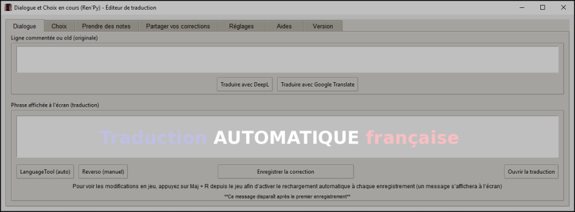
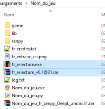
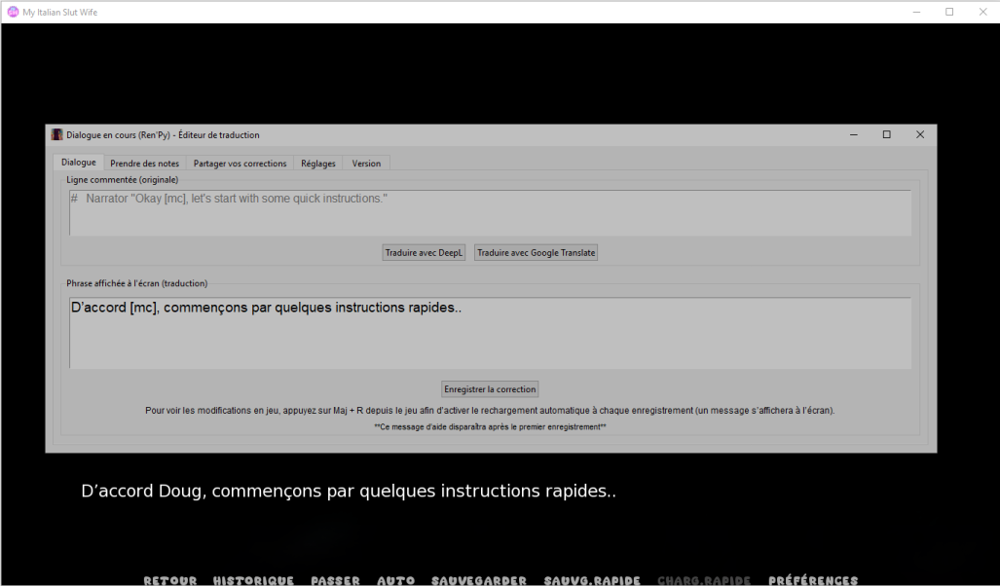
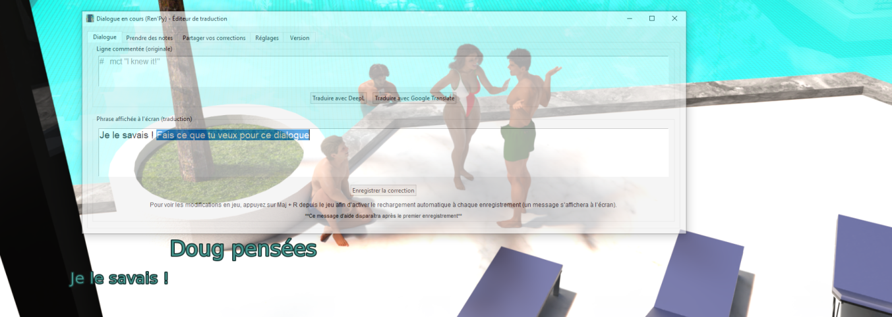
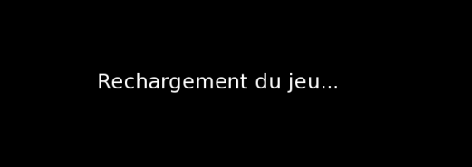

🧭 Sommaire
- 🛠️ Présentation
- 🔗 Téléchargement & compatibilité
- 🆕 Historique des versions
- 🚀 Installation
- 🖥️ Utilisation
- 🔄 Rechargement automatique
- ⚙️ Fonctionnalités principales
- 🟦 Présentation de l’éditeur (v0.2)
- 🧩 Infos techniques supplémentaires
- 🧠 Infos techniques de relecture
- 💡 Bonnes pratiques
- 🔍 Cas particuliers
- 📤 Partager vos corrections
- ❓ FAQ
- 🧯 Dépannage
- 👥 Crédits / Remerciements
- 🔄 Fonctionnalités à venir
- 🚧 État actuel
🛠️ 📝 Présentation
Bonjour,
Je propose un petit outil destiné aux personnes qui ne savent pas,
ou ne souhaitent pas, modifier directement les fichiers de traduction.
Ce projet a été développé à l’origine pour répondre à une demande visant une solution simple et accessible.
Cette version est exclusive à mes traductions ! Elle ne fonctionne pas avec un dossier
french ni avec tout autre dossier de traduction.
🔗 Téléchargement & compatibilité
🔗 Lien de téléchargement : Télécharger l’éditeur
Pensez à vérifier régulièrement vos fichiers et à effectuer des sauvegardes.
Compatibilité : Ren'Py 8 (Ren'Py 7 partiellement compatible)
🆕 Historique des versions
- v0.1 — Version initiale.
-
MISE À JOUR v0.2
- Nouveau système de protection des balises (désactivable dans les réglages).
- Ajout d’un popup au démarrage pour rappeler d’activer le rechargement automatique (désactivable).
- Ajout de deux boutons de correction vers LanguageTool et Reverso.
- Prise en charge du mode plein écran du jeu.
- Protection automatique des guillemets
"en\"(insertion / modification / enregistrement). - Correction de différents bugs.
-
MISE À JOUR v0.3
- Ajout d’un bouton pour ouvrir le fichier de traduction à la ligne correspondante.
- Ajout d’un onglet Aides avec quelques détails sur la relecture.
- Correction de différents bugs.
-
MISE À JOUR v0.4
- Prise en charge des lignes de choix dans un nouvel onglet.
- …
🚀 Installation
- Extraire l’archive
.rardans le dossier du jeu (là où se trouve l’exécutable.exedu jeu). - ✅ Pour que le jeu soit compatible avec l’éditeur, extraire l’archive avant de lancer le jeu.

📂 Fichiers créés
./fr_relecture.exe # Exécutable de l'éditeur
./game/fr_relecture.rpyc # Fichier de lecture du jeu pour l'éditeur
Le fichier fr_relecture.rpyc doit être présent dans le dossier game
afin d’être lu par le jeu au démarrage.
🖥️ Utilisation
2️⃣ Exécuter fr_relecture.exe
✅ L’exécutable fr_relecture.exe peut être lancé avant, pendant ou après le jeu.

Le lancement de l’éditeur créera un fichier temporaire nommé fr_relecture_temp.json.
3️⃣ Commencer la correction des lignes
✅ L’éditeur affiche en temps réel ce qui se passe à l’écran. Avancez ou reculez dans le jeu : la ligne de dialogue en cours sera affichée. Modifiez un mot, une expression ou toute la ligne !

Toute modification de ligne est enregistrée temporairement dans
fr_relecture_temp.json.💡 À savoir ❗ Ces modifications sont visibles uniquement dans l’éditeur, pas dans le jeu.
Ce bouton enregistre tout votre travail dans les fichiers
.rpy de traduction.
❗ Vous pouvez utiliser ce bouton à tout moment : modifiez une ligne, puis cliquez sur le bouton pour enregistrer.
🔄 Activation du rechargement automatique

Pour activer l’affichage des modifications dans le jeu, il faut recharger le jeu à chaque fois. Le bouton Enregistrer la correction peut effectuer ce rechargement automatiquement, mais une première manipulation manuelle est nécessaire.
👉 En jeu, appuyez sur Maj + R pour effectuer le rechargement initial. Ensuite, à chaque appui sur “Enregistrer la correction”, les dialogues modifiés seront affichés dans le jeu.
⚙️ Fonctionnalités principales
- Protection automatique des balises
[](désactivable) - Protection automatique des guillemets
"→\" - Boutons : DeepL, Google, LanguageTool, Reverso
- Notes personnelles (
fr_relecture_notes.txt) - Export / partage des corrections en
.zip - Mode fenêtre toujours au-dessus
- Réglage d’opacité
- Ouverture du fichier de traduction à la ligne correspondante (v0.3)
- Prise en charge des lignes de choix dans un onglet dédié (v0.4)
- Prise en charge du mode plein écran du jeu (v0.2)
🟦 Présentation de l’éditeur (v0.2)
⚙️ Dialogue
- Ligne commentée (originale) : affiche la ligne originale non traduite.
- Boutons DeepL / Google : ouvre une page dans le navigateur avec la ligne originale copiée.
- Phrase affichée à l’écran (traduction) : affiche la ligne de traduction visible en jeu.
- Enregistrer la correction : enregistre vos modifications directement dans les fichiers de traduction.
📝 Prendre des notes
Permet d’écrire librement des notes durant la relecture.
Un fichier fr_relecture_notes.txt sera créé par le bouton d’enregistrement des notes
et automatiquement rechargé à chaque ouverture de l’éditeur.
📦 Partager vos corrections
Permet d’archiver votre travail dans un fichier .zip.
🔧 Réglages
- Opacité : transparence de la fenêtre pour mieux voir le jeu en arrière-plan.
- Fenêtre toujours au premier plan : garde l’éditeur visible au-dessus du jeu.
- Message de confirmation d’enregistrement : active/désactive la confirmation.
- Protéger les balises […] : empêche les modifications accidentelles (sauf suppression si sélectionnée).
- Protection des guillemets échappés : non modifiable (automatique).
ℹ️ Version
Affiche des informations sur l’éditeur et des liens de contact.
🧩 Informations techniques supplémentaires
Le premier lancement de fr_relecture.exe se fera toujours avec les paramètres par défaut.
Si un paramètre est modifié, il sera sauvegardé dans fr_relecture_config.json.
Au prochain redémarrage du même fr_relecture.exe, vos paramètres seront chargés depuis ce fichier.
Si vous utilisez fr_relecture.exe sur un autre jeu, les paramètres par défaut seront utilisés.
Si vous voulez garder vos réglages, copiez simplement
fr_relecture_config.json
dans votre nouveau projet.
🧠 Informations techniques de relecture
✅ Balises protégées (entre crochets)
Les blocs entre crochets [] sont automatiquement protégés lors de l’édition
(désactivable dans les réglages). Cela évite les erreurs (balise mal ouverte / non refermée / différente de l’originale)
et limite les risques de plantage.
[mc] [mom.name] [penny.name!c]
Exemple : [mc] sera automatiquement remplacé par le nom du personnage principal choisi par le joueur.
⚠️ Balises NON protégées (entre accolades)
Les balises de style {} ne sont pas protégées. Si elles sont modifiées, mal fermées ou supprimées,
cela peut entraîner des erreurs d’affichage ou un comportement imprévu.
{b}texte{/b} → Gras
{i}texte{/i} → Italique
{u}texte{/u} → Souligné
{s}texte{/s} → Barré
{color=#FF0000}texte{/color} → Texte coloré
{size=20}texte{/size} → Taille 20
{size=+5}texte{/size} → Augmente la taille de 5
{size=-5}texte{/size} → Diminue la taille de 5
{w} → Pause pendant l'affichage
⏸️ Pause {w}
Si {w} est présent, il ne s’affichera pas dans le jeu : le dialogue s’arrêtera temporairement à cet endroit.
C’est normal si l’éditeur affiche toute la ligne d’un coup : il faut avancer dans le jeu pour voir la suite après la pause.
↩️ Saut de ligne
Pour faire un saut de ligne, utilisez \n :
Bonjour.\nComment vas-tu ?
Affiché en jeu :
Bonjour.
Comment vas-tu ?
🔒 Guillemets
Les guillemets " sont automatiquement protégés avec un antislash \" lors de l’insertion,
modification ou enregistrement.
Il a dit \"Bonjour\".
En jeu, les antislashs ne sont pas affichés : Il a dit "Bonjour".
💡 Bonnes pratiques de relecture
- Relisez toujours en contexte, en observant ce qui est affiché à l’écran.
- Ne modifiez pas les balises
{}ou[]si vous n’êtes pas sûr de leur fonction. - Sauvegardez régulièrement via Enregistrer la correction.
🔍 Cas particuliers à connaître
Pensez à utiliser un chemin d’accès simple pour l’emplacement du jeu.
Évitez les caractères spéciaux comme les crochets [ ou ] dans le nom des dossiers.
✅ C:\Jeux\MonJeu
⛔ C:\[Traductions]\Jeu X
📤 Comment partager vos corrections
❓ Questions fréquentes (FAQ)
Aucun dialogue ne s'affiche ?
Vérifie que tu as bien fr_relecture.rpyc dans le dossier game,
avant de lancer le jeu.
🧯 Dépannage
👥 Crédits / Remerciements
🔄 Fonctionnalités à venir
- Mode sombre / clair
🚧 État actuel & phase de test
✅ L’outil est pleinement opérationnel et actuellement en phase de test.
Des mises à jour viendront progressivement améliorer l’expérience selon vos besoins !